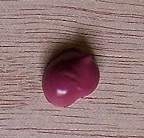

Thèses et HDR
Hommages
* Rabea Aniq-Filali : Repenser les systèmes éducatifs : Quel genre d'apprentissage pour le 21ème siècle ?
* Zach Boufoy-Bastick : A Tribute to Professor Marie-Madeleine Martinet
* Pascale Drouet : L'Othello de Shakespeare et les miroirs de Welles
* Pierre Dubois : Generic Hybridization of the Organ Voluntary, from Henry Purcell to William Russell
* Séverine Letalleur-Sommer : Colliding perspectives: the notion of 'focus' revisited (from optics to sentence analysis)
* Sophie Mesplede : Animals, Beauty and Morality: Crossing Inter-Species Boundaries
* Linda Monborren-Benabdillah : Hommage à Melle Martinet
******
 Chapitre précédent : CSTI
Chapitre précédent : CSTI
 Retour au menu principal
Retour au menu principal
 Chapitre suivant : E-humanities
Chapitre suivant : E-humanities